import pandas as pd
import numpy as np
import matplotlib.pyplot as plt
import seaborn as sns
import koreanize_matplotlib
%config InlineBackend.figure_format = 'retina'12 ‘한국복지패널 데이터’ 톺아보기
12.1 데이터 분석 준비하기
12.1.1 1. 데이터 준비하기
12.1.2 2. 패키지 설치 및 로드하기
12.1.2.1 3. 데이터 불러오기
raw_welfare = pd.read_spss('data/Koweps_hpwc14_2019_beta2.sav')
welfare = raw_welfare.copy()12.1.2.2 4. 데이터 검토하기
welfare| h14_id | h14_ind | h14_sn | h14_merkey | h_new | h14_cobf | p14_wsc | p14_wsl | p14_wgc | p14_wgl | ... | wc14_64 | wc14_65 | wc14_5aq4 | wc14_5aq5 | wc14_5aq6 | h14_pers_income1 | h14_pers_income2 | h14_pers_income3 | h14_pers_income4 | h14_pers_income5 | |
|---|---|---|---|---|---|---|---|---|---|---|---|---|---|---|---|---|---|---|---|---|---|
| 0 | 2.0 | 1.0 | 1.0 | 20101.0 | 0.0 | NaN | 0.291589 | 0.291589 | 1307.764781 | 1307.764781 | ... | NaN | NaN | NaN | NaN | NaN | NaN | NaN | 0.0 | NaN | |
| 1 | 3.0 | 1.0 | 1.0 | 30101.0 | 0.0 | NaN | 0.419753 | 0.419753 | 1882.570960 | 1882.570960 | ... | NaN | NaN | NaN | NaN | NaN | NaN | NaN | 0.0 | NaN | |
| 2 | 4.0 | 1.0 | 1.0 | 40101.0 | 0.0 | NaN | 0.265263 | 0.265980 | 1189.691668 | 1192.908537 | ... | NaN | NaN | NaN | NaN | NaN | 1284.0 | NaN | 0.0 | NaN | |
| 3 | 6.0 | 1.0 | 1.0 | 60101.0 | 0.0 | NaN | 0.494906 | 0.495941 | 2219.630833 | 2224.273816 | ... | 1.0 | . | 2.0 | 4.0 | 4.0 | 2304.0 | NaN | 1800.0 | 0.0 | NaN |
| 4 | 6.0 | 1.0 | 1.0 | 60101.0 | 0.0 | NaN | 1.017935 | 1.017935 | 4565.389177 | 4565.389177 | ... | 1.0 | . | 1.0 | 5.0 | 2.0 | NaN | NaN | NaN | 0.0 | NaN |
| ... | ... | ... | ... | ... | ... | ... | ... | ... | ... | ... | ... | ... | ... | ... | ... | ... | ... | ... | ... | ... | ... |
| 14413 | 9800.0 | 7.0 | 1.0 | 98000701.0 | 1.0 | NaN | NaN | NaN | NaN | NaN | ... | NaN | NaN | NaN | NaN | NaN | NaN | NaN | 0.0 | NaN | |
| 14414 | 9800.0 | 7.0 | 1.0 | 98000701.0 | 1.0 | NaN | NaN | NaN | NaN | NaN | ... | NaN | NaN | NaN | NaN | NaN | NaN | NaN | 0.0 | NaN | |
| 14415 | 9800.0 | 7.0 | 1.0 | 98000701.0 | 1.0 | NaN | NaN | NaN | NaN | NaN | ... | NaN | NaN | NaN | NaN | NaN | 208.0 | NaN | 0.0 | NaN | |
| 14416 | 9800.0 | 7.0 | 1.0 | 98000701.0 | 1.0 | NaN | NaN | NaN | NaN | NaN | ... | 5.0 | . | 4.0 | 3.0 | 3.0 | NaN | 1200.0 | NaN | 0.0 | NaN |
| 14417 | 9800.0 | 7.0 | 1.0 | 98000701.0 | 1.0 | NaN | NaN | NaN | NaN | NaN | ... | NaN | NaN | NaN | NaN | NaN | NaN | NaN | 0.0 | NaN |
14418 rows × 830 columns
welfare.shape # 행, 열 개수 출력(14418, 830)welfare.info() # 변수 속성 출력<class 'pandas.core.frame.DataFrame'>
RangeIndex: 14418 entries, 0 to 14417
Columns: 830 entries, h14_id to h14_pers_income5
dtypes: float64(826), object(4)
memory usage: 91.3+ MBwelfare.describe() # 요약 통계량| h14_id | h14_ind | h14_sn | h14_merkey | h_new | h14_cobf | p14_wsc | p14_wsl | p14_wgc | p14_wgl | ... | wc14_63 | wc14_64 | wc14_5aq4 | wc14_5aq5 | wc14_5aq6 | h14_pers_income1 | h14_pers_income2 | h14_pers_income3 | h14_pers_income4 | h14_pers_income5 | |
|---|---|---|---|---|---|---|---|---|---|---|---|---|---|---|---|---|---|---|---|---|---|
| count | 14418.000000 | 14418.000000 | 14418.000000 | 1.441800e+04 | 14418.000000 | 121.000000 | 11513.000000 | 11513.000000 | 11513.000000 | 11513.000000 | ... | 2027.000000 | 2027.000000 | 2027.000000 | 2027.000000 | 2027.000000 | 2659.000000 | 3331.000000 | 989.000000 | 14418.000000 | 715.000000 |
| mean | 4672.108406 | 3.121723 | 1.004855 | 4.672140e+07 | 0.201484 | 2.256198 | 1.000000 | 1.000000 | 4484.952219 | 4484.952541 | ... | 3.211643 | 3.743957 | 3.513567 | 4.100641 | 3.233350 | 4141.380594 | 1389.440408 | 3457.835187 | 2.038702 | 1183.292308 |
| std | 2792.998128 | 3.297963 | 0.143205 | 2.793014e+07 | 0.401123 | 1.675952 | 0.906021 | 1.016782 | 4063.459773 | 4560.218659 | ... | 2.174768 | 3.138629 | 1.045929 | 0.937712 | 1.289456 | 2583.755449 | 1211.910836 | 6619.516319 | 32.965477 | 2147.418274 |
| min | 2.000000 | 1.000000 | 1.000000 | 2.010100e+04 | 0.000000 | 1.000000 | 0.001998 | 0.000000 | 8.960093 | 0.000000 | ... | 1.000000 | 1.000000 | 1.000000 | 1.000000 | 1.000000 | 0.000000 | 0.000000 | -47000.000000 | 0.000000 | -10600.000000 |
| 25% | 2356.000000 | 1.000000 | 1.000000 | 2.356030e+07 | 0.000000 | 1.000000 | 0.341814 | 0.269286 | 1533.021553 | 1207.736094 | ... | 1.000000 | 2.000000 | 3.000000 | 4.000000 | 2.000000 | 2448.000000 | 391.500000 | 1000.000000 | 0.000000 | 206.000000 |
| 50% | 4535.000000 | 1.000000 | 1.000000 | 4.535010e+07 | 0.000000 | 2.000000 | 0.726304 | 0.704045 | 3257.436901 | 3157.609630 | ... | 3.000000 | 3.000000 | 4.000000 | 4.000000 | 3.000000 | 3540.000000 | 1116.000000 | 2498.000000 | 0.000000 | 530.000000 |
| 75% | 6616.000000 | 7.000000 | 1.000000 | 6.616010e+07 | 0.000000 | 2.000000 | 1.366071 | 1.390045 | 6126.762919 | 6234.287538 | ... | 5.000000 | 5.000000 | 4.000000 | 5.000000 | 4.000000 | 5378.500000 | 2040.000000 | 4687.000000 | 0.000000 | 1295.000000 |
| max | 9800.000000 | 14.000000 | 9.000000 | 9.800070e+07 | 1.000000 | 7.000000 | 4.727006 | 5.790039 | 21200.393903 | 25968.049029 | ... | 9.000000 | 99.000000 | 9.000000 | 9.000000 | 9.000000 | 22700.000000 | 11500.000000 | 170000.000000 | 3000.000000 | 22644.000000 |
8 rows × 826 columns
12.1.2.3 5. 변수명 바꾸기
welfare = welfare.rename(columns = {'h14_g3' : 'sex', # 성별
'h14_g4' : 'birth', # 태어난 연도
'h14_g10' : 'marriage_type', # 혼인 상태
'h14_g11' : 'religion', # 종교
'p1402_8aq1' : 'income', # 월급
'h14_eco9' : 'code_job', # 직업 코드
'h14_reg7' : 'code_region'}) # 지역 코드12.2 Q. 성별에 따른 월급 차이 - 성별에 따라 월급이 다를까?
12.2.1 변수 검토하기
welfare['sex'].dtypes # 변수 타입 출력dtype('float64')welfare['sex'].value_counts() # 빈도 구하기sex
2.0 7913
1.0 6505
Name: count, dtype: int6412.2.2 전처리하기
# 이상치 확인
welfare['sex'].value_counts()sex
2.0 7913
1.0 6505
Name: count, dtype: int64# 이상치 결측 처리
welfare['sex'] = np.where(welfare['sex'] == 9, np.nan, welfare['sex'])
# 결측치 확인
welfare['sex'].isna().sum()0# 성별 항목 이름 부여
welfare['sex'] = np.where(welfare['sex'] == 1, 'male', 'female')
# 빈도 구하기
welfare['sex'].value_counts()sex
female 7913
male 6505
Name: count, dtype: int64# 빈도 막대 그래프 만들기
sns.countplot(data = welfare, x = 'sex')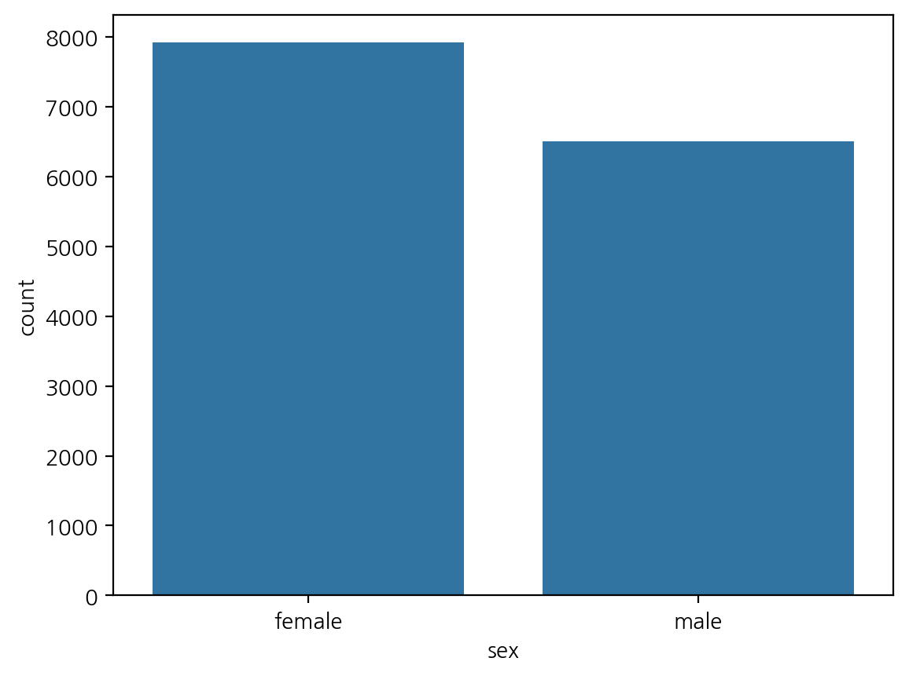
12.2.3 변수 검토하기
welfare['income'].dtypes # 변수 타입 출력dtype('float64')welfare['income'].describe() # 요약 통계량 구하기count 4534.000000
mean 268.455007
std 198.021206
min 0.000000
25% 150.000000
50% 220.000000
75% 345.750000
max 1892.000000
Name: income, dtype: float64sns.histplot(data = welfare, x = 'income') # 히스토그램 만들기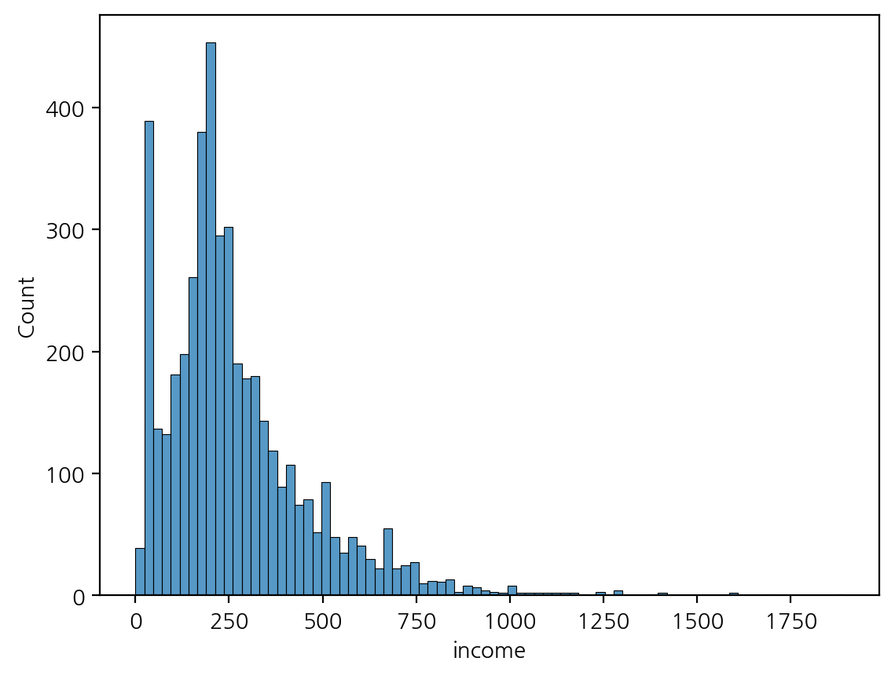
12.2.4 전처리하기
welfare['income'].describe() # 이상치 확인count 4534.000000
mean 268.455007
std 198.021206
min 0.000000
25% 150.000000
50% 220.000000
75% 345.750000
max 1892.000000
Name: income, dtype: float64welfare['income'].isna().sum() # 결측치 확인9884# 이상치 결측 처리
welfare['income'] = np.where(welfare['income'] == 9999, np.nan, welfare['income'])
# 결측치 확인
welfare['income'].isna().sum()988412.2.5 성별 월급 평균표 만들기
## 성별 월급 평균표 만들기
# income 결측치 제거
# sex별 분리
# income 평균 구하기
sex_income = welfare.dropna(subset = ['income']) \
.groupby('sex', as_index = False) \
.agg(mean_income = ('income', 'mean'))
sex_income| sex | mean_income | |
|---|---|---|
| 0 | female | 186.293096 |
| 1 | male | 349.037571 |
12.2.6 그래프 만들기
# 막대 그래프 만들기
sns.barplot(data = sex_income, x = 'sex', y = 'mean_income') 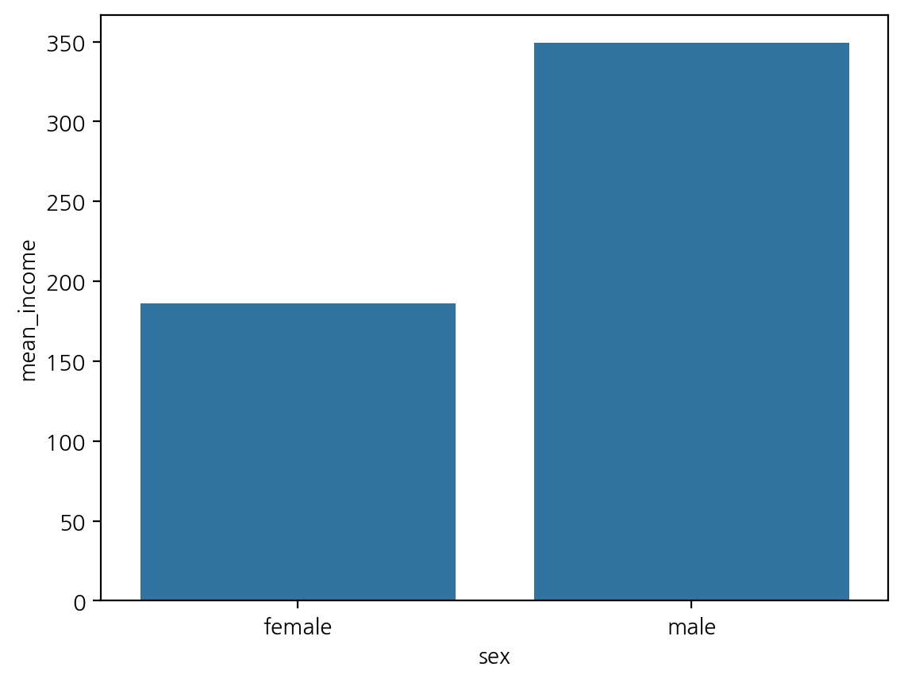
12.3 Q. 나이와 월급의 관계 - 몇 살 때 월급을 가장 많이 받을까?
12.3.1 변수 검토하기
welfare['birth'].dtypes # 변수 타입 출력dtype('float64')welfare['birth'].describe() # 요약 통계량 구하기count 14418.000000
mean 1969.280205
std 24.402250
min 1907.000000
25% 1948.000000
50% 1968.000000
75% 1990.000000
max 2018.000000
Name: birth, dtype: float64sns.histplot(data = welfare, x = 'birth') # 히스토그램 만들기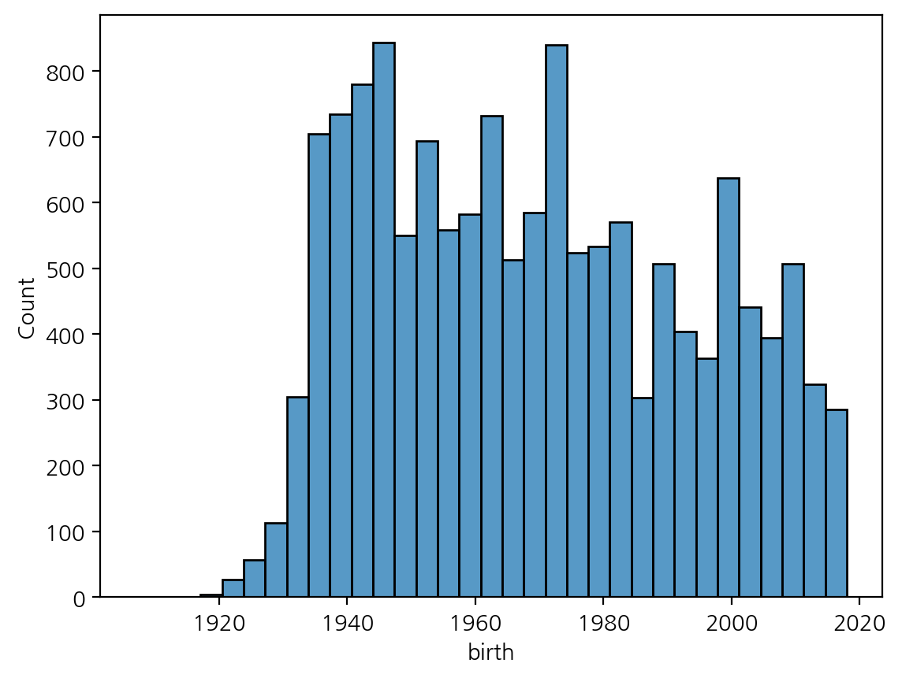
12.3.2 전처리하기
welfare['birth'].describe() # 이상치 확인count 14418.000000
mean 1969.280205
std 24.402250
min 1907.000000
25% 1948.000000
50% 1968.000000
75% 1990.000000
max 2018.000000
Name: birth, dtype: float64welfare['birth'].isna().sum() # 결측치 확인0# 이상치 결측 처리
welfare['birth'] = np.where(welfare['birth'] == 9999, np.nan, welfare['birth'])
# 결측치 확인
welfare['birth'].isna().sum()012.3.3 파생변수 만들기 - 나이
welfare = welfare.assign(age = 2024 - welfare['birth']) # 나이 변수 만들기
welfare['age'].describe() # 요약 통계량 구하기count 14418.000000
mean 54.719795
std 24.402250
min 6.000000
25% 34.000000
50% 56.000000
75% 76.000000
max 117.000000
Name: age, dtype: float64sns.histplot(data = welfare, x = 'age') # 히스토그램 만들기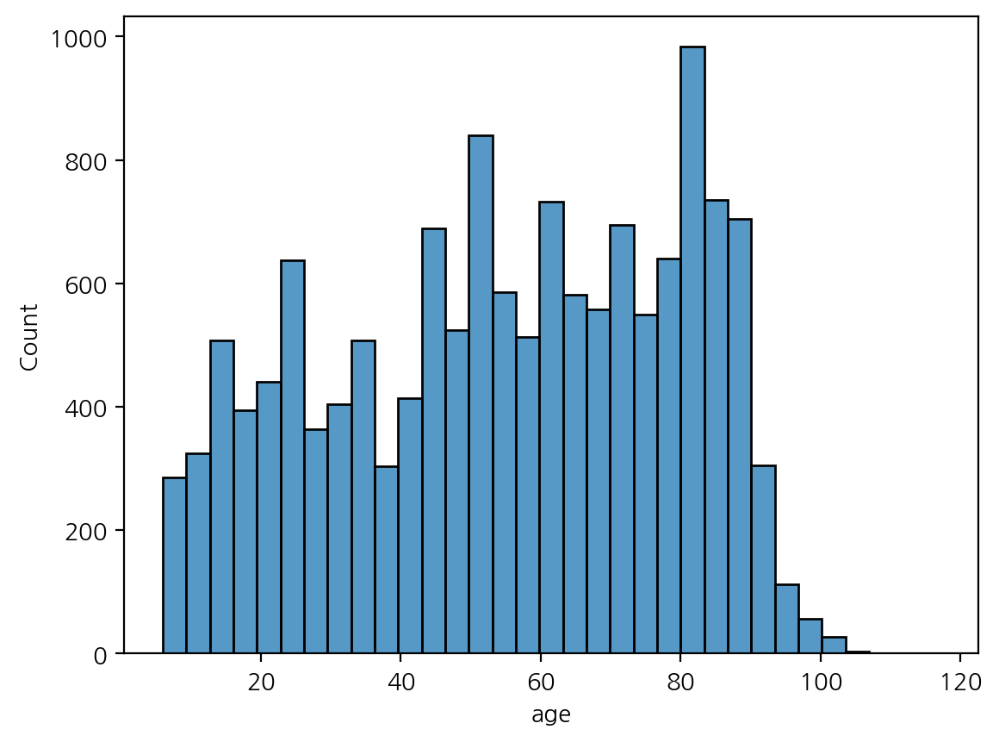
12.3.4 나이에 따른 월급 평균표 만들기
## 나이별 월급 평균표 만들기
# income 결측치 제거
# age별 분리
# income 평균 구하기
age_income = welfare.dropna(subset = ['income']) \
.groupby('age') \
.agg(mean_income = ('income', 'mean'))
age_income.head()| mean_income | |
|---|---|
| age | |
| 23.0 | 162.000000 |
| 24.0 | 121.333333 |
| 25.0 | 136.400000 |
| 26.0 | 123.666667 |
| 27.0 | 179.676471 |
12.3.5 그래프 만들기
# 선 그래프 만들기
sns.lineplot(data = age_income, x = 'age', y = 'mean_income') 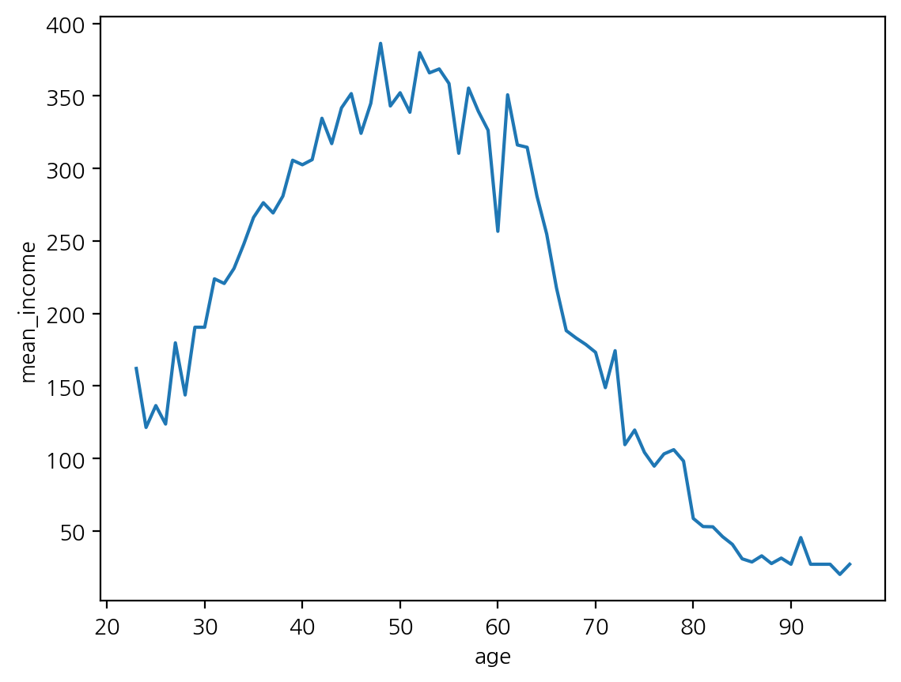
12.4 Q. 연령대에 따른 월급 차이 - 어떤 연령대의 월급이 가장 많을까?
12.4.1 파생변수 만들기 - 연령대
# 나이 변수 살펴보기
welfare['age'].head()0 79.0
1 76.0
2 82.0
3 62.0
4 61.0
Name: age, dtype: float64# 연령대 변수 만들기
welfare = welfare.assign(ageg = np.where(welfare['age'] < 30, 'young',
np.where(welfare['age'] <= 59, 'middle', 'old')))
# 빈도 구하기
welfare['ageg'].value_counts()ageg
old 6687
middle 4779
young 2952
Name: count, dtype: int64# 빈도 막대 그래프 만들기
sns.countplot(data = welfare, x = 'ageg')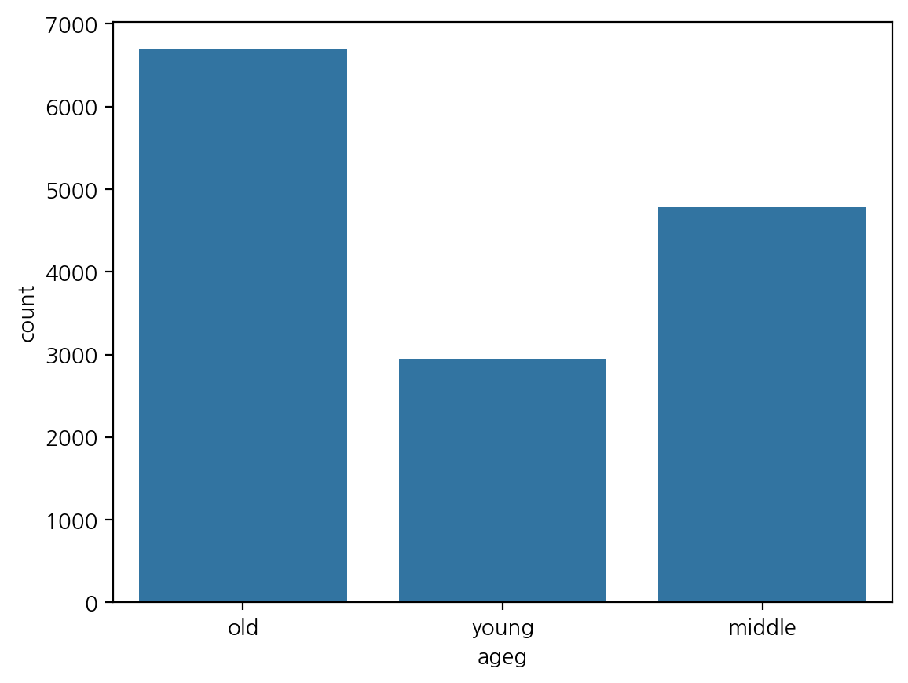
12.4.2 연령대별 월급 평균표 만들기
## 연령대별 월급 평균표 만들기
# income 결측치 제거
# ageg별 분리
# income 평균 구하기
ageg_income = welfare.dropna(subset = ['income']) \
.groupby('ageg', as_index = False) \
.agg(mean_income = ('income', 'mean'))
ageg_income| ageg | mean_income | |
|---|---|---|
| 0 | middle | 318.787366 |
| 1 | old | 181.846579 |
| 2 | young | 160.610526 |
12.4.3 그래프 만들기
# 막대 그래프 만들기
sns.barplot(data = ageg_income, x = 'ageg', y = 'mean_income')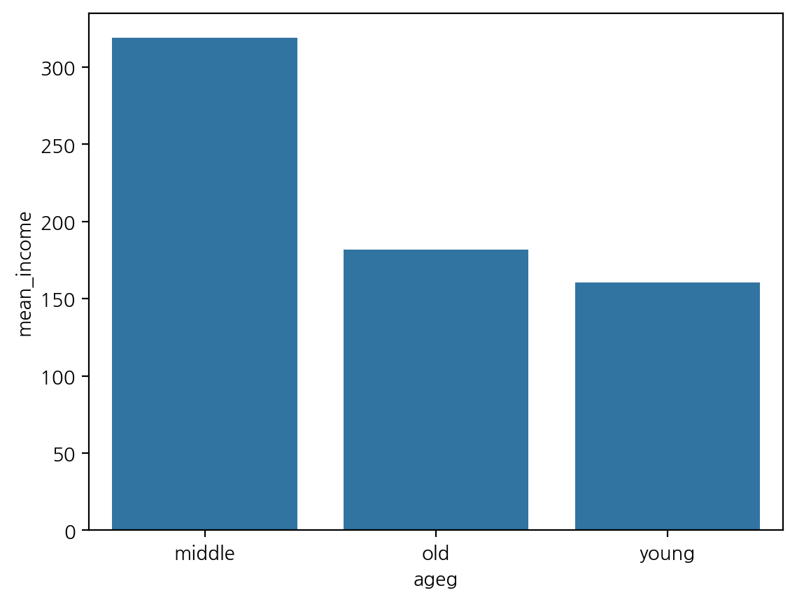
# 막대 정렬하기
sns.barplot(data = ageg_income, x = 'ageg', y = 'mean_income',
order = ['young', 'middle', 'old'])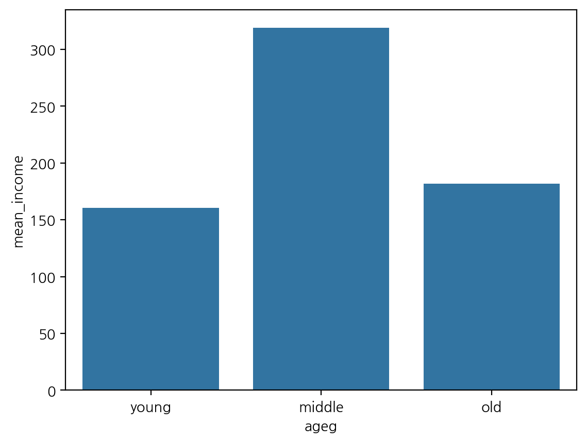
12.5 Q. 연령대 및 성별 월급 차이 - 성별 월급 차이는 연령대별로 다를까?
12.5.1 연령대 및 성별 월급 평균표 만들기
## 연령대 및 성별 평균표 만들기
# income 결측치 제거
# ageg 및 sex별 분리
# income 평균 구하기
sex_income = welfare.dropna(subset = ['income']) \
.groupby(['ageg', 'sex'], as_index = False) \
.agg(mean_income = ('income', 'mean'))
sex_income| ageg | sex | mean_income | |
|---|---|---|---|
| 0 | middle | female | 235.104262 |
| 1 | middle | male | 388.250158 |
| 2 | old | female | 109.727503 |
| 3 | old | male | 268.323708 |
| 4 | young | female | 160.042254 |
| 5 | young | male | 162.291667 |
12.5.2 그래프 만들기
# 막대 그래프 만들기
sns.barplot(data = sex_income, x = 'ageg', y = 'mean_income', hue = 'sex',
order = ['young', 'middle', 'old'])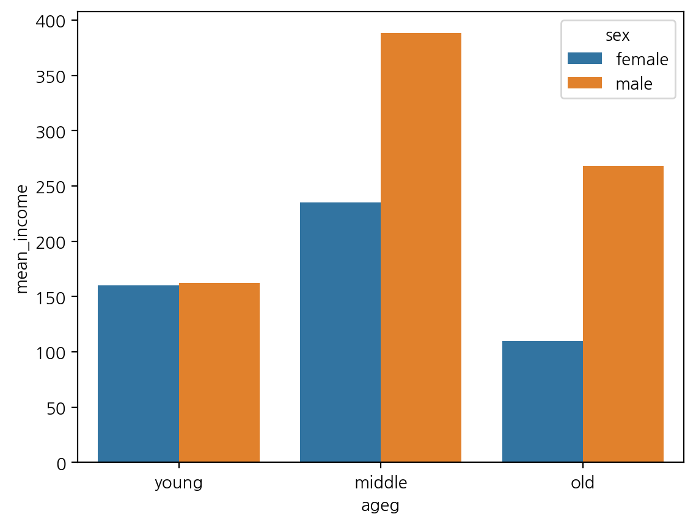
12.5.3 나이 및 성별 월급 차이 분석하기
## 나이 및 성별 월급 평균표 만들기
# income 결측치 제거
# age 및 sex별 분리
# income 평균 구하기
sex_age = welfare.dropna(subset = ['income']) \
.groupby(['age', 'sex'], as_index = False) \
.agg(mean_income = ('income', 'mean'))
sex_age.head()| age | sex | mean_income | |
|---|---|---|---|
| 0 | 23.0 | male | 162.000000 |
| 1 | 24.0 | female | 87.666667 |
| 2 | 24.0 | male | 155.000000 |
| 3 | 25.0 | female | 124.000000 |
| 4 | 25.0 | male | 186.000000 |
# 선 그래프 만들기
sns.lineplot(data = sex_age, x = 'age', y = 'mean_income', hue = 'sex')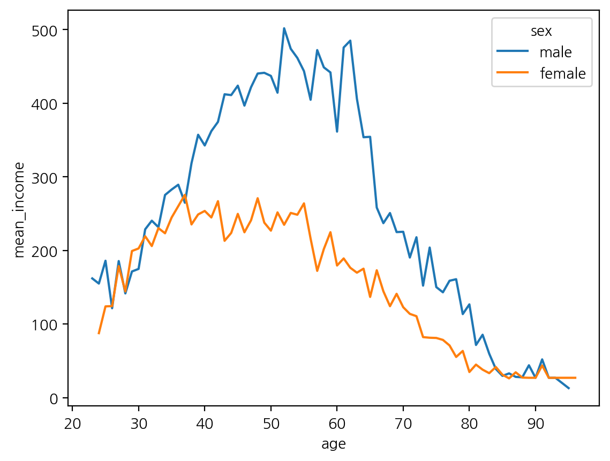
12.6 Q. 직업별 월급 차이 - 어떤 직업이 월급을 가장 많이 받을까?
12.6.1 변수 검토하기
welfare['code_job'].dtypes # 변수 타입 출력dtype('float64')welfare['code_job'].value_counts() # 빈도 구하기code_job
611.0 962
941.0 391
521.0 354
312.0 275
873.0 236
...
112.0 2
784.0 2
423.0 1
861.0 1
872.0 1
Name: count, Length: 150, dtype: int6412.6.2 전처리하기
list_job = pd.read_excel('data/Koweps_Codebook_2019.xlsx', sheet_name = '직종코드')
list_job.head()| code_job | job | |
|---|---|---|
| 0 | 111 | 의회 의원∙고위 공무원 및 공공단체 임원 |
| 1 | 112 | 기업 고위 임원 |
| 2 | 121 | 행정 및 경영 지원 관리자 |
| 3 | 122 | 마케팅 및 광고∙홍보 관리자 |
| 4 | 131 | 연구∙교육 및 법률 관련 관리자 |
list_job.shape # 행, 열 개수 출력(156, 2)# welfare에 list_job 결합하기
welfare = welfare.merge(list_job, how = 'left', on = 'code_job')# code_job 결측치 제거하고 code_job, job 출력
welfare.dropna(subset = ['code_job'])[['code_job', 'job']].head()| code_job | job | |
|---|---|---|
| 2 | 762.0 | 전기공 |
| 3 | 855.0 | 금속기계 부품 조립원 |
| 7 | 941.0 | 청소원 및 환경미화원 |
| 8 | 999.0 | 기타 서비스 관련 단순 종사자 |
| 14 | 312.0 | 경영 관련 사무원 |
12.6.3 직업별 월급 평균표 만들기
## 직업별 월급 평균표 만들기
# job, income 결측치 제거
# job별 분리
# income 평균 구하기
job_income = welfare.dropna(subset = ['job', 'income']) \
.groupby('job', as_index = False) \
.agg(mean_income = ('income', 'mean'))
job_income.head()| job | mean_income | |
|---|---|---|
| 0 | 가사 및 육아 도우미 | 92.455882 |
| 1 | 간호사 | 265.219178 |
| 2 | 감정∙기술영업및중개관련종사자 | 391.000000 |
| 3 | 건물 관리원 및 검표원 | 168.375000 |
| 4 | 건설 및 광업 단순 종사자 | 261.975000 |
12.6.4 그래프 만들기
(1) 월급이 많은 직업
# 상위 10위 추출
top10 = job_income.sort_values('mean_income', ascending = False).head(10)
top10| job | mean_income | |
|---|---|---|
| 98 | 의료 진료 전문가 | 781.000000 |
| 60 | 법률 전문가 | 776.333333 |
| 140 | 행정 및 경영 지원 관리자 | 771.833333 |
| 63 | 보험 및 금융 관리자 | 734.750000 |
| 110 | 재활용 처리 및 소각로 조작원 | 688.000000 |
| 131 | 컴퓨터 하드웨어 및 통신공학 전문가 | 679.444444 |
| 24 | 기계∙로봇공학 기술자 및 시험원 | 669.166667 |
| 6 | 건설∙전기 및 생산 관련 관리자 | 603.083333 |
| 120 | 제관원 및 판금원 | 597.000000 |
| 100 | 의회 의원∙고위 공무원 및 공공단체 임원 | 580.500000 |
# 막대 그래프 만들기
sns.barplot(data = top10, y = 'job', x = 'mean_income')c:\Users\sigma\Practices\ds-bootcamp\.venv\Lib\site-packages\IPython\core\events.py:82: UserWarning: Glyph 8729 (\N{BULLET OPERATOR}) missing from current font.
func(*args, **kwargs)
c:\Users\sigma\Practices\ds-bootcamp\.venv\Lib\site-packages\IPython\core\pylabtools.py:152: UserWarning: Glyph 8729 (\N{BULLET OPERATOR}) missing from current font.
fig.canvas.print_figure(bytes_io, **kw)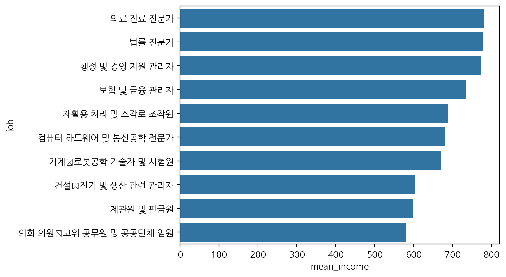
(2) 월급이 적은 직업
# 하위 10위 추출
bottom10 = job_income.sort_values('mean_income').head(10)
bottom10| job | mean_income | |
|---|---|---|
| 33 | 기타 돌봄∙보건 및 개인 생활 서비스 종사자 | 73.964286 |
| 34 | 기타 서비스 관련 단순 종사자 | 77.789474 |
| 128 | 청소원 및 환경미화원 | 88.461756 |
| 0 | 가사 및 육아 도우미 | 92.455882 |
| 43 | 돌봄 및 보건 서비스 종사자 | 117.162338 |
| 97 | 음식 관련 단순 종사자 | 118.187500 |
| 39 | 농림∙어업 관련 단순 종사자 | 122.625000 |
| 139 | 학예사∙사서 및 기록물 관리사 | 140.000000 |
| 126 | 채굴 및 토목 관련 기능 종사자 | 140.000000 |
| 135 | 판매 관련 단순 종사자 | 140.909091 |
# 막대 그래프 만들기
sns.barplot(data = bottom10, y = 'job', x = 'mean_income') \
.set(xlim = [0, 800])c:\Users\sigma\Practices\ds-bootcamp\.venv\Lib\site-packages\IPython\core\events.py:82: UserWarning: Glyph 8729 (\N{BULLET OPERATOR}) missing from current font.
func(*args, **kwargs)
c:\Users\sigma\Practices\ds-bootcamp\.venv\Lib\site-packages\IPython\core\pylabtools.py:152: UserWarning: Glyph 8729 (\N{BULLET OPERATOR}) missing from current font.
fig.canvas.print_figure(bytes_io, **kw)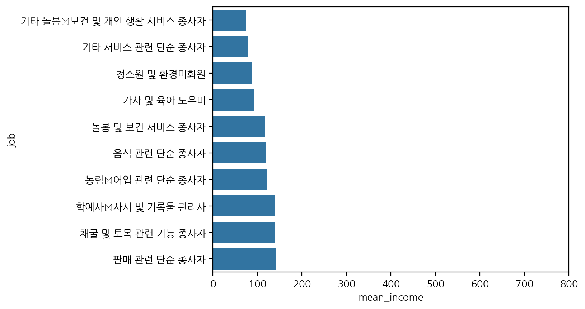
12.7 Q. 성별 직업 빈도 - 성별로 어떤 직업이 가장 많을까?
12.7.1 성별 직업 빈도표 만들기
## 남성 직업 빈도 상위 10개 추출
# job 결측치 제거
# male 추출
# job별 분리
# job 빈도 구하기
# 내림차순 정렬
# 상위 10행 추출
job_male = welfare.dropna(subset = ['job']) \
.query('sex == "male"') \
.groupby('job', as_index = False) \
.agg(n = ('job', 'count')) \
.sort_values('n', ascending = False) \
.head(10)
job_male| job | n | |
|---|---|---|
| 107 | 작물 재배 종사자 | 486 |
| 104 | 자동차 운전원 | 230 |
| 11 | 경영 관련 사무원 | 216 |
| 46 | 매장 판매 종사자 | 142 |
| 89 | 영업 종사자 | 113 |
| 127 | 청소원 및 환경미화원 | 109 |
| 4 | 건설 및 광업 단순 종사자 | 96 |
| 120 | 제조 관련 단순 종사자 | 80 |
| 3 | 건물 관리원 및 검표원 | 79 |
| 141 | 행정 사무원 | 74 |
## 여성 직업 빈도 상위 10개 추출
# job 결측치 제거
# female 추출
# job별 분리
# job 빈도 구하기
# 내림차순 정렬
# 상위 10행 추출
job_female = welfare.dropna(subset = ['job']) \
.query('sex == "female"') \
.groupby('job', as_index = False) \
.agg(n = ('job', 'count')) \
.sort_values('n', ascending = False) \
.head(10)
job_female| job | n | |
|---|---|---|
| 83 | 작물 재배 종사자 | 476 |
| 91 | 청소원 및 환경미화원 | 282 |
| 33 | 매장 판매 종사자 | 212 |
| 106 | 회계 및 경리 사무원 | 163 |
| 31 | 돌봄 및 보건 서비스 종사자 | 155 |
| 87 | 제조 관련 단순 종사자 | 148 |
| 73 | 음식 관련 단순 종사자 | 126 |
| 58 | 식음료 서비스 종사자 | 117 |
| 88 | 조리사 | 114 |
| 24 | 기타 서비스 관련 단순 종사자 | 97 |
12.7.2 그래프 만들기
# 남성 직업 빈도 막대 그래프 만들기
sns.barplot(data = job_male, y = 'job', x = 'n').set(xlim = [0, 500])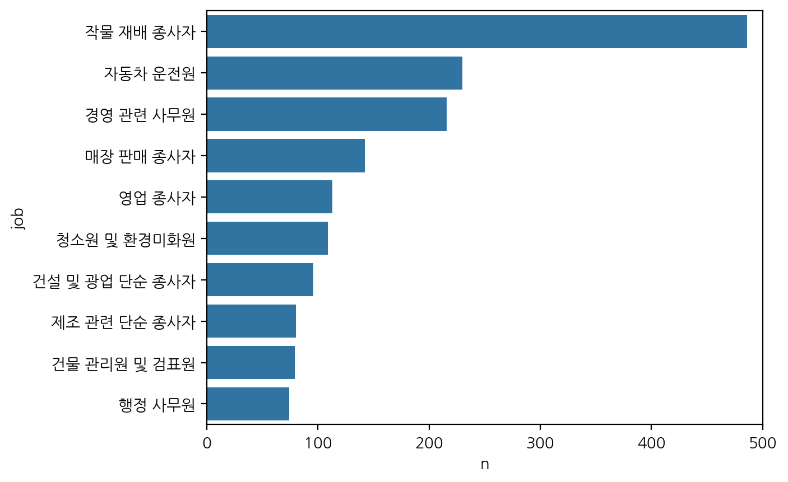
# 여성 직업 빈도 막대 그래프 만들기
sns.barplot(data = job_female, y = 'job', x = 'n').set(xlim = [0, 500])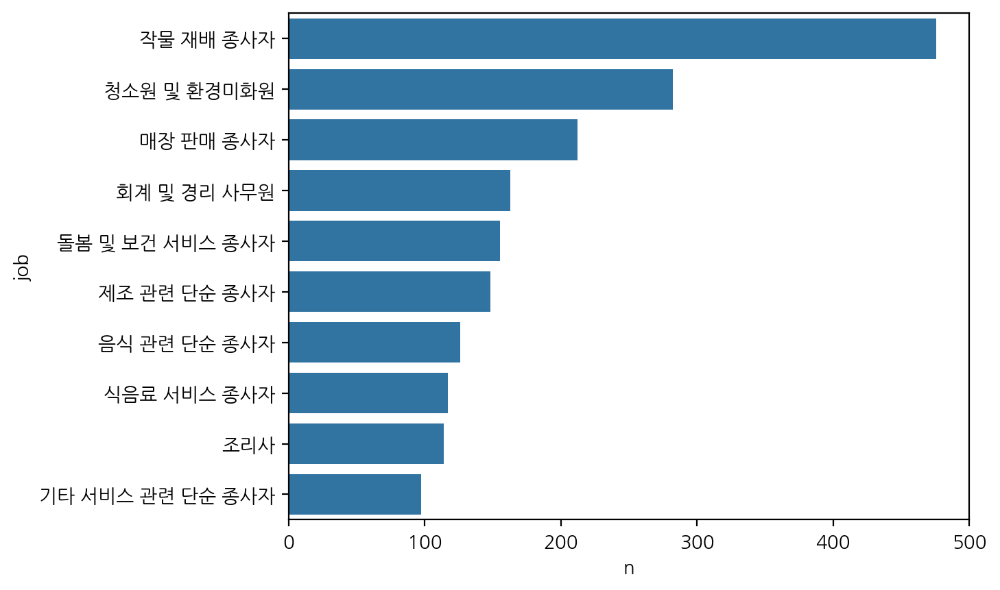
12.8 Q. 종교 유무에 따른 이혼율 - 종교가 있으면 이혼을 덜 할까?
12.8.1 변수 검토하기
welfare['religion'].dtypes # 변수 타입 출력dtype('float64')welfare['religion'].value_counts() # 빈도 구하기religion
2.0 7815
1.0 6603
Name: count, dtype: int6412.8.2 전처리하기
# 종교 유무 이름 부여
welfare['religion'] = np.where(welfare['religion'] == 1, 'yes', 'no')
# 빈도 구하기
welfare['religion'].value_counts()religion
no 7815
yes 6603
Name: count, dtype: int64# 막대 그래프 만들기
sns.countplot(data = welfare, x = 'religion')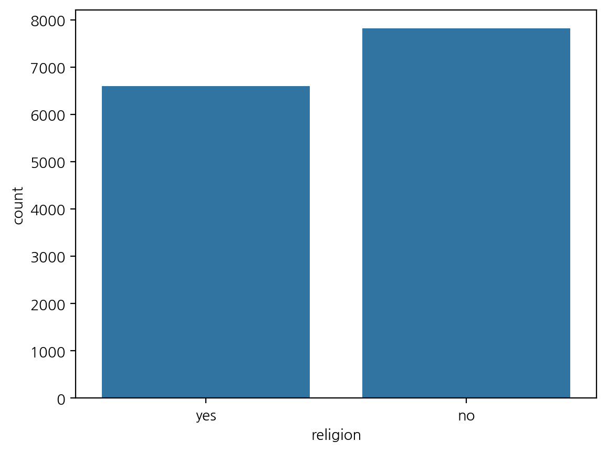
12.8.3 변수 검토하기
welfare['marriage_type'].dtypes # 변수 타입 출력dtype('float64')welfare['marriage_type'].value_counts() # 빈도 구하기marriage_type
1.0 7190
5.0 2357
0.0 2121
2.0 1954
3.0 689
4.0 78
6.0 29
Name: count, dtype: int6412.8.4 파생변수 만들기 - 이혼 여부
# 이혼 여부 변수 만들기
welfare['marriage'] = np.where(welfare['marriage_type'] == 1, 'marriage',
np.where(welfare['marriage_type'] == 3, 'divorce', 'etc'))## 이혼 여부별 빈도
# marriage별 분리
# marriage별 빈도 구하기
n_divorce = welfare.groupby('marriage', as_index = False) \
.agg(n = ('marriage', 'count'))
n_divorce| marriage | n | |
|---|---|---|
| 0 | divorce | 689 |
| 1 | etc | 6539 |
| 2 | marriage | 7190 |
# 막대 그래프 만들기
sns.barplot(data = n_divorce, x = 'marriage', y = 'n')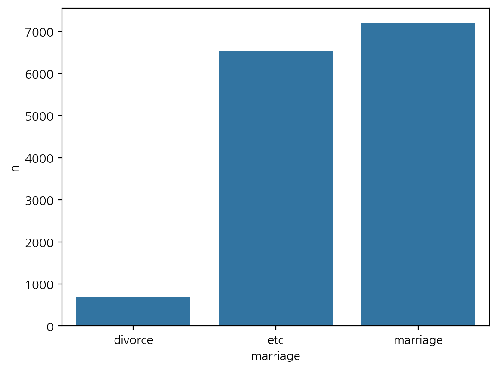
12.9 Q. 종교 유무에 따른 이혼율 분석하기
12.9.1 종교 유무에 따른 이혼율표 만들기
# etc 제외
# religion별 분리
# marriage 추출
# 비율 구하기
rel_div = welfare.query('marriage != "etc"') \
.groupby('religion', as_index = False) \
['marriage'] \
.value_counts(normalize = True)
rel_div| religion | marriage | proportion | |
|---|---|---|---|
| 0 | no | marriage | 0.905045 |
| 1 | no | divorce | 0.094955 |
| 2 | yes | marriage | 0.920469 |
| 3 | yes | divorce | 0.079531 |
12.9.2 그래프 만들기
# divorce 추출
# 백분율로 바꾸기
# 반올림
rel_div = rel_div.query('marriage == "divorce"') \
.assign(proportion = rel_div['proportion'] * 100) \
.round(1)
rel_div| religion | marriage | proportion | |
|---|---|---|---|
| 1 | no | divorce | 9.5 |
| 3 | yes | divorce | 8.0 |
# 막대 그래프 만들기
sns.barplot(data = rel_div, x = 'religion', y = 'proportion')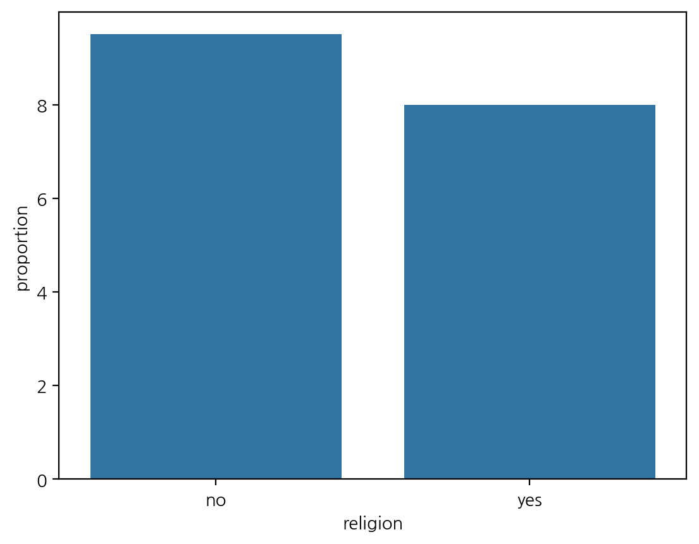
12.10 Q. 연령대 및 종교 유무에 따른 이혼율 분석하기
12.10.1 연령대별 이혼율표 만들기
# etc 제외
# ageg별 분리
# marriage 추출
# 비율 구하기
age_div = welfare.query('marriage != "etc"') \
.groupby('ageg', as_index = False) \
['marriage'] \
.value_counts(normalize = True)
age_div| ageg | marriage | proportion | |
|---|---|---|---|
| 0 | middle | marriage | 0.918763 |
| 1 | middle | divorce | 0.081237 |
| 2 | old | marriage | 0.907898 |
| 3 | old | divorce | 0.092102 |
| 4 | young | marriage | 1.000000 |
## 연령대 및 이혼 여부별 빈도
# etc 제외
# ageg별 분리
# marriage 추출
# 빈도 구하기
welfare.query('marriage != "etc"') \
.groupby('ageg', as_index = False) \
['marriage'] \
.value_counts()| ageg | marriage | count | |
|---|---|---|---|
| 0 | middle | marriage | 3031 |
| 1 | middle | divorce | 268 |
| 2 | old | marriage | 4150 |
| 3 | old | divorce | 421 |
| 4 | young | marriage | 9 |
12.10.2 연령대별 이혼율 그래프 만들기
# 초년층 제외, 이혼 추출
# 백분율로 바꾸기
# 반올림
age_div = age_div.query('ageg != "young" & marriage == "divorce"') \
.assign(proportion = age_div['proportion'] * 100) \
.round(1)
age_div| ageg | marriage | proportion | |
|---|---|---|---|
| 1 | middle | divorce | 8.1 |
| 3 | old | divorce | 9.2 |
# 막대 그래프 만들기
sns.barplot(data = age_div, x = 'ageg', y = 'proportion')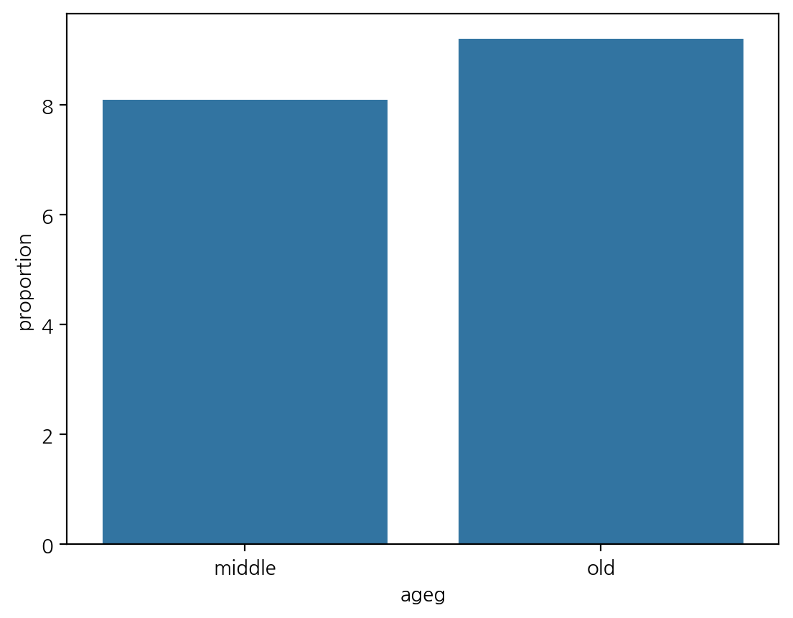
12.10.3 연령대 및 종교 유무에 따른 이혼율표 만들기
# etc 제외, 초년층 제외
# ageg, religion별 분리
# marriage 추출
# 비율 구하기
age_rel_div = welfare.query('marriage != "etc" & ageg != "young"') \
.groupby(['ageg', 'religion'], as_index = False) \
['marriage'] \
.value_counts(normalize = True)
age_rel_div| ageg | religion | marriage | proportion | |
|---|---|---|---|---|
| 0 | middle | no | marriage | 0.913350 |
| 1 | middle | no | divorce | 0.086650 |
| 2 | middle | yes | marriage | 0.926941 |
| 3 | middle | yes | divorce | 0.073059 |
| 4 | old | no | marriage | 0.896736 |
| 5 | old | no | divorce | 0.103264 |
| 6 | old | yes | marriage | 0.916998 |
| 7 | old | yes | divorce | 0.083002 |
12.10.4 연령대 및 종교 유무에 따른 이혼율 그래프 만들기
# divorce 추출
# 백분율로 바꾸기
# 반올림
age_rel_div = age_rel_div.query('marriage == "divorce"') \
.assign(proportion = age_rel_div['proportion'] * 100) \
.round(1)
age_rel_div| ageg | religion | marriage | proportion | |
|---|---|---|---|---|
| 1 | middle | no | divorce | 8.7 |
| 3 | middle | yes | divorce | 7.3 |
| 5 | old | no | divorce | 10.3 |
| 7 | old | yes | divorce | 8.3 |
# 막대 그래프 만들기
sns.barplot(data = age_rel_div, x = 'ageg', y = 'proportion', hue = 'religion')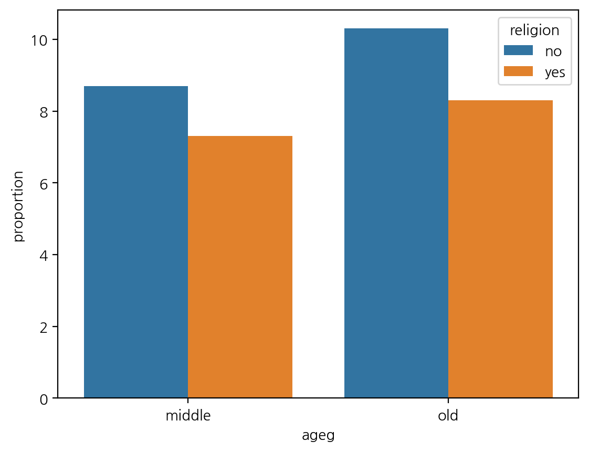
12.11 Q. 지역별 연령대 비율 - 어느 지역에 노년층이 많을까?
12.11.1 변수 검토하기
welfare['code_region'].dtypes # 변수 타입 출력dtype('float64')welfare['code_region'].value_counts() # 빈도 구하기code_region
2.0 3246
7.0 2466
3.0 2448
1.0 2002
4.0 1728
5.0 1391
6.0 1137
Name: count, dtype: int6412.11.2 전처리하기
# 지역 코드 목록 만들기
list_region = pd.DataFrame({'code_region' : [1, 2, 3, 4, 5, 6, 7],
'region' : ['서울',
'수도권(인천/경기)',
'부산/경남/울산',
'대구/경북',
'대전/충남',
'강원/충북',
'광주/전남/전북/제주도']})
list_region| code_region | region | |
|---|---|---|
| 0 | 1 | 서울 |
| 1 | 2 | 수도권(인천/경기) |
| 2 | 3 | 부산/경남/울산 |
| 3 | 4 | 대구/경북 |
| 4 | 5 | 대전/충남 |
| 5 | 6 | 강원/충북 |
| 6 | 7 | 광주/전남/전북/제주도 |
# 지역명 변수 추가
welfare = welfare.merge(list_region, how = 'left', on = 'code_region')
welfare[['code_region', 'region']].head()| code_region | region | |
|---|---|---|
| 0 | 1.0 | 서울 |
| 1 | 1.0 | 서울 |
| 2 | 1.0 | 서울 |
| 3 | 1.0 | 서울 |
| 4 | 1.0 | 서울 |
12.11.3 지역별 연령대 비율표 만들기
# region별 분리
# ageg 추출
# 비율 구하기
region_ageg = welfare.groupby('region', as_index = False) \
['ageg'] \
.value_counts(normalize = True)
region_ageg| region | ageg | proportion | |
|---|---|---|---|
| 0 | 강원/충북 | old | 0.509235 |
| 1 | 강원/충북 | middle | 0.288478 |
| 2 | 강원/충북 | young | 0.202287 |
| 3 | 광주/전남/전북/제주도 | old | 0.492295 |
| 4 | 광주/전남/전북/제주도 | middle | 0.307380 |
| 5 | 광주/전남/전북/제주도 | young | 0.200324 |
| 6 | 대구/경북 | old | 0.552662 |
| 7 | 대구/경북 | middle | 0.280671 |
| 8 | 대구/경북 | young | 0.166667 |
| 9 | 대전/충남 | old | 0.453630 |
| 10 | 대전/충남 | middle | 0.329978 |
| 11 | 대전/충남 | young | 0.216391 |
| 12 | 부산/경남/울산 | old | 0.493873 |
| 13 | 부산/경남/울산 | middle | 0.313725 |
| 14 | 부산/경남/울산 | young | 0.192402 |
| 15 | 서울 | old | 0.435065 |
| 16 | 서울 | middle | 0.377123 |
| 17 | 서울 | young | 0.187812 |
| 18 | 수도권(인천/경기) | old | 0.378312 |
| 19 | 수도권(인천/경기) | middle | 0.377696 |
| 20 | 수도권(인천/경기) | young | 0.243993 |
12.11.4 그래프 만들기
# 백분율로 바꾸기
# 반올림
region_ageg = region_ageg.assign(proportion = region_ageg['proportion'] * 100) \
.round(1)
region_ageg| region | ageg | proportion | |
|---|---|---|---|
| 0 | 강원/충북 | old | 50.9 |
| 1 | 강원/충북 | middle | 28.8 |
| 2 | 강원/충북 | young | 20.2 |
| 3 | 광주/전남/전북/제주도 | old | 49.2 |
| 4 | 광주/전남/전북/제주도 | middle | 30.7 |
| 5 | 광주/전남/전북/제주도 | young | 20.0 |
| 6 | 대구/경북 | old | 55.3 |
| 7 | 대구/경북 | middle | 28.1 |
| 8 | 대구/경북 | young | 16.7 |
| 9 | 대전/충남 | old | 45.4 |
| 10 | 대전/충남 | middle | 33.0 |
| 11 | 대전/충남 | young | 21.6 |
| 12 | 부산/경남/울산 | old | 49.4 |
| 13 | 부산/경남/울산 | middle | 31.4 |
| 14 | 부산/경남/울산 | young | 19.2 |
| 15 | 서울 | old | 43.5 |
| 16 | 서울 | middle | 37.7 |
| 17 | 서울 | young | 18.8 |
| 18 | 수도권(인천/경기) | old | 37.8 |
| 19 | 수도권(인천/경기) | middle | 37.8 |
| 20 | 수도권(인천/경기) | young | 24.4 |
# 막대 그래프 만들기
sns.barplot(data = region_ageg, y = 'region', x = 'proportion', hue = 'ageg')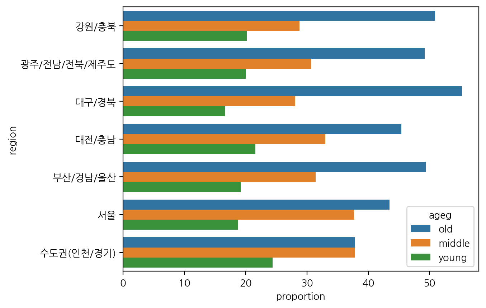
12.11.5 3. 누적 비율 막대 그래프 만들기
(1) 피벗하기
# 피벗
pivot_df = region_ageg[['region', 'ageg', 'proportion']].pivot(index = 'region',
columns = 'ageg',
values = 'proportion')
pivot_df| ageg | middle | old | young |
|---|---|---|---|
| region | |||
| 강원/충북 | 28.8 | 50.9 | 20.2 |
| 광주/전남/전북/제주도 | 30.7 | 49.2 | 20.0 |
| 대구/경북 | 28.1 | 55.3 | 16.7 |
| 대전/충남 | 33.0 | 45.4 | 21.6 |
| 부산/경남/울산 | 31.4 | 49.4 | 19.2 |
| 서울 | 37.7 | 43.5 | 18.8 |
| 수도권(인천/경기) | 37.8 | 37.8 | 24.4 |
(2) 그래프 만들기
# 가로 막대 그래프 만들기
pivot_df.plot.barh(stacked = True)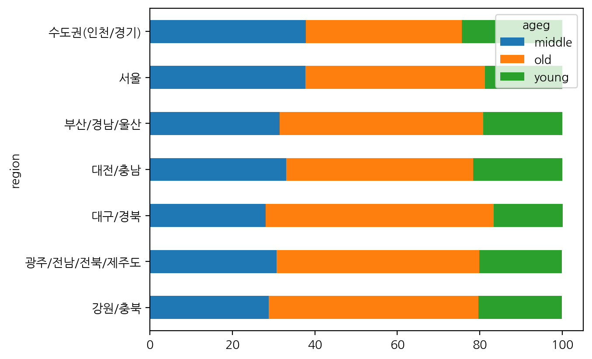
(3) 막대 정렬하기
# 노년층 비율 기준 정렬, 변수 순서 바꾸기
reorder_df = pivot_df.sort_values('old')[['young', 'middle', 'old']]
reorder_df| ageg | young | middle | old |
|---|---|---|---|
| region | |||
| 수도권(인천/경기) | 24.4 | 37.8 | 37.8 |
| 서울 | 18.8 | 37.7 | 43.5 |
| 대전/충남 | 21.6 | 33.0 | 45.4 |
| 광주/전남/전북/제주도 | 20.0 | 30.7 | 49.2 |
| 부산/경남/울산 | 19.2 | 31.4 | 49.4 |
| 강원/충북 | 20.2 | 28.8 | 50.9 |
| 대구/경북 | 16.7 | 28.1 | 55.3 |
# 누적 가로 막대 그래프 만들기
reorder_df.plot.barh(stacked = True)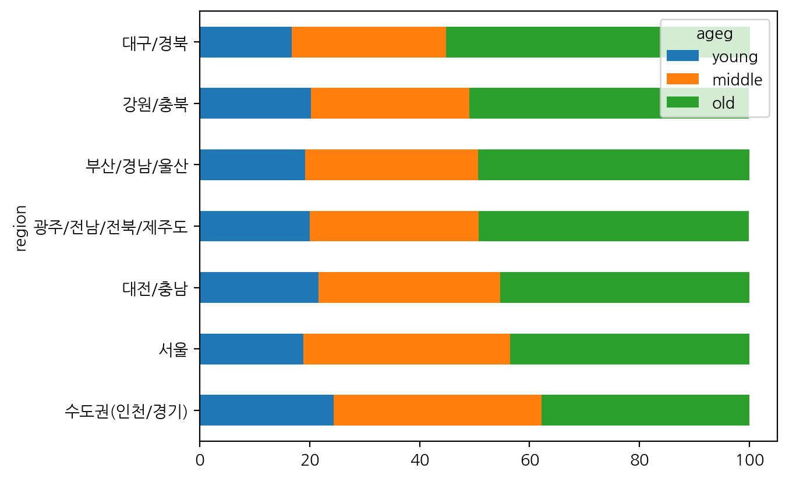